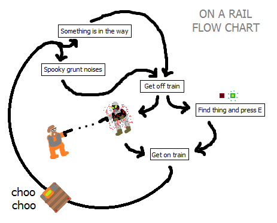

I hadn’t played Black Mesa since release, and I just discovered the Surface Tension and On A Rail Uncut content mods, as well as the fact that the author has been hired by the Black Mesa team.
My ignorant, idiot opinion is that he wasn’t hired to bring his talents to only preexisting content in Black Mesa. Creative agreements have become a lot more complicated since the Steam Green Light and the team’s decision to sell their product, and putting him on the payroll removes barriers for incorporating his work.
I’m going to speculate, time permitting, that the uncut mods have inspired the team to expand the current iteration of On a Rail. I’ve been given almost a decade to learn that even if the black mesa team says something isn’t worth the trouble, they are going to do it anyway, no matter how long everyone has to wait.
Playing On a Rail Uncut opened by eyes to the weaknesses of the chapter in all three iterations: Half-life, Black Mesa, and Uncut itself. I don’t believe I have anything unique to say, but it’s stuff I don’t hear enough. This got longer and longer the more I wrote, not trying to state the obvious.
Why On A Rail sucked (Half-life)
Players that are having fun have a wealth of patience. Players that are bored have next to none. Without patience, players can’t tolerate complexity and delay gratification, qualities of games that make reaching goals feel far more rewarding. Unfortunately, complexity and delayed gratification take too much of the blame for the frustration surrounding On A Rail.
Attempting to reduce player frustration is battling a symptom, not the problem. The chapter can be salvaged this way, but the fact will remain that on a rail is not fun.
Consider the premise of On A Rail, as a design pitch, compared to how things actually turn out. The player has been slowly walking, jumping, crawling, and climbing their way through the game environment for hours. As a prize for slaying the Gargantua, they are greeted with a change of pace. They get to ride a train on a rail road, sans green goo bath.
Trains are time-honored in video games because they are a gold mine of ideas. You can travel fast, crash through things with impunity, perform tasks on moving platforms, avoid obstacles, switch tracks and carts with quick thinking, and so on. I couldn’t conceive a way that anyone could make them boring.
It happened.

It’s almost as if On a rail is deliberately designed so that the player never wants to use the rail cart. The chapter’s hallmark gameplay asset goes completely wasted.
If you attempt to have any fun on the cart, or at the very least, do something to justify riding a train in a train level, the game punishes you. The entire railway is nothing but a checklist of traps, ambushes, and roadblocks. You are taught early on that traveling fast reduces your ability to react to hazards, and that everything from point A to point B is arranged to kill you if you choose to remain on the cart.
The enforced strategy is to travel at the lowest speed and forfeit the cart at the first sign of danger. Evasion and combat are way easier on foot, and by extension fast travel through the tunnels is safer on foot. The cart is not required to complete any section of the chapter, and the player can skip sections and take shortcuts without it. It is totally useless.
The pretense is a lie. On a rail is not a vehicle mission - it is an escort mission, until the player correctly decides that the cart is not needed.
Even worse, the level design takes stop-and-go to such an extreme that you simulate being stuck in traffic. You crawl your cart through the tunnels for mere seconds at a time, and just before you feel the sensation of progress, you are forced to dismount the cart and spend a disproportionately larger time clearing out obstacles on foot. The reward is the right to escort your cart a few dozen meters and do it again.
One of the staples of Half-Life’s success was its rollercoaster pacing - rising and falling between intense and mellow, and never letting the player remain in one or the other too long. On A Rail uses that same process sped up to the point of parody, where the player doesn’t spend enough time in either.
Valve amended these problems in Half-Life 2 with their airboat and car sections. Like On a Rail, you spend a lot of time halting travel to solve puzzles and dismantle combine outposts. But unlike On A Rail, the stops are well designed and of a balanced length as to not feel like a contrived chore or a slavish task, and briefly inching along on a track is replaced by intense vehicle action and chase segments. I’m also not afraid to stay in the airboat and car, I’m afraid to get out.
A close look
Prefacing each section is a tallied list of how many times the chapter heavily suggests or forces you abandon your cart. Note that it’s always a good idea to exit the cart, but this list can’t include everything that attempts to kill you, only very harsh ambushes the player is probably meant to avoid entirely.
c2a2a---------------------------------------------------------------------
Stops: [OPTIONAL] Path to rocket ass
(1) Path to crane controls to clear track
Most of the distaste I hear for on a rail is directed at its first map. This isn’t really surprising, but I’m of the opinion that it’s one of the least problematic maps in the chapter.
I’m going to have to switch to a graphic for this part. It’s impossible to walk a reader through this without visual aid at a glance:
I’d like to hear some responses after seeing the level dissected. Does the first map try to do too much or too little? What’s the problem here? I know people say they don’t like feeling lost, but I think the less obvious problem is players want something else to do besides wandering the tracks. They feel lost and bored.
c2a2b1+c2a2c------------------------------------------------------------
Stops: (2) [SUGGESTED] First revolving elevator - marine ambush
(3) Gate at Marine/Vort crossfire, switch immediately accessible
>>[SUGGESTED] explorable area, Marine/Vort battle in long office
This map is where my opening complaints come to light. It begins with the revolving elevator and marine ambush. The player is planted in a open position, and they are force to correct their aim with the rotation of the elevator against marines with superior cover and a partial surround. The design encourages you to abandon the cart mid-ascent and take the ladder instead, a nice metaphor for the rest of the chapter.
Next up is the split track with the small marine encampment and mounted gun. The design here is a little strange. Each track has its own gate, with the switch to proceed immediately accessible on the wall, but the player is given the option to follow stairways on either side. One leads back to the cargo elevator used in the marine ambush for some pick-ups, and the other takes you to an expansive 2nd floor corridor that terminates further down the track. A large Marine/Vortigaunt shootout triggers at the end on arrival.
My problem with the design is the game encourages you to dismount your cart just to walk to a fight instead of driving there, and then backtrack to your cart when you realize there isn’t anything left there to do in the aftermath. And if you decide to just skip the stairs and proceed on rails, you miss out on the upper level content entirely.
Surprisingly it is pretty safe to drive through the crossfire ahead at full speed. But you’re a little late for the action because of trip mines planted in the way - they spawn right in front of your cart after a loading screen.
c2a2d---------------------------------------------------------------------
Stops: (4) Silo access combat sequence
No complaints about this area. The rocket silo is designed to be an intermission, and the short rail section immediately after is straightforward.
c2a2e---------------------------------------------------------------------
Stops: (5) Area fronting the side-by-side track and it’s gate switch
(6) Large Marine hold out protecting switch
(7) [SUGGESTED] Second revolving elevator - marine ambush - explosive elevator
Personally, this is where my patience starts to get thin. A lot of time has gone by and there’s been plenty of interruptions along the way. The player has seen the rocket and is expecting closure in a reasonable timeframe.
Resorting to graphics again:
c2a2f---------------------------------------------------------------------
Stops: (8) Gate in low-hanging box conveyor hall, switch immediately accessible
The final rail section. Pretty straightforward with a single rail switcher to required to exit a square-shaped loop. I just wish they didn’t feel the need to place another gate here.
I came to the total of 8 stops, the issue here is both the frequency and quality of the stops.
But only 8 stops doesn’t sound like something to be concerned about, and for me it wasn’t. I’ve played through On A Rail many times without feeling the need to write up a crusade. It’s a problem you have to exaggerate to notice the effects.
And with that we’re getting to what I mean by Uncut being an eye-opener. It also made me see the wisdom behind the Black Mesa Team gutting the chapter, necessary or not.
But let me get this out of the way: Uncut is an amazing accomplishment. It’s unfinished and not everything the author wanted. He made it crazy fast, and he did it all with a limited tool set, damning constraints, and a lot of daily stress. It also wasn’t designed by committee, and most of the feedback was forum users who are going to give an overly-optimistic appraisal because they are just damn grateful the mod even exists.
This also isn’t a criticism of On A Rail Uncut. The time for that has come and gone. I’m merely calling attention to a proven way to make the chapter worse.
Here is a list of stops after Uncut is added to Black Mesa.
(1) Track elevator/power plug puzzle
(2) First revolving elevator - turret trap
---------------------------------------------------UNCUT
[3] Area to break loop with power/crane/switches
[4] Security Office search and Marine/Vortigaunt combat in long office
--------------------------------------------------/UNCUT
(5) Silo access combat sequence
--------------------------------------------------UNCUT
[6] Blast door blocking material transit, switch at a brief distance
[7] Area fronting the side-by-side track and it’s gate switch
[8] Large marine hold out protecting switch
[9] Second Revolving elevator - marine ambush - explosive elevator
[10] Gate in low-hanging box conveyor hall, switch immediately accessible
[11] Gate to exit outdoor warehouse, switch at a brief distance
[12] Outdoor control box to break loop and subsequent ambush
[13] Destroyed Revolving elevator
--------------------------------------------------/UNCUT
https://tvtropes.org/pmwiki/pmwiki.php/Main/AreWeThereYet
13 stops, and they are longer, much longer. The effects of that left me feeling very drained. Level fatigue. It’s there in the original On A Rail, just too subtle to put a finger on. The first thing I did after completeing Uncut was open MS Paint and bust out the flow chart above.
That’s all I have to say about the first half of fixing On A Rail, streamlining. I need to stop clacking on this and actually get something posted. The rest of the stuff I have to say is about making the cart segments fun and exciting, which requires radicalization.
Also are there any devs who would like to lend me their ear? It might be a little hubristic, but if I talked anyone into even one of my ideas, I’d like for it to stay a surprise like anything else in the game.

 The devs are pretty cool, you especially!
The devs are pretty cool, you especially!


{kind=link}
{kind=link}